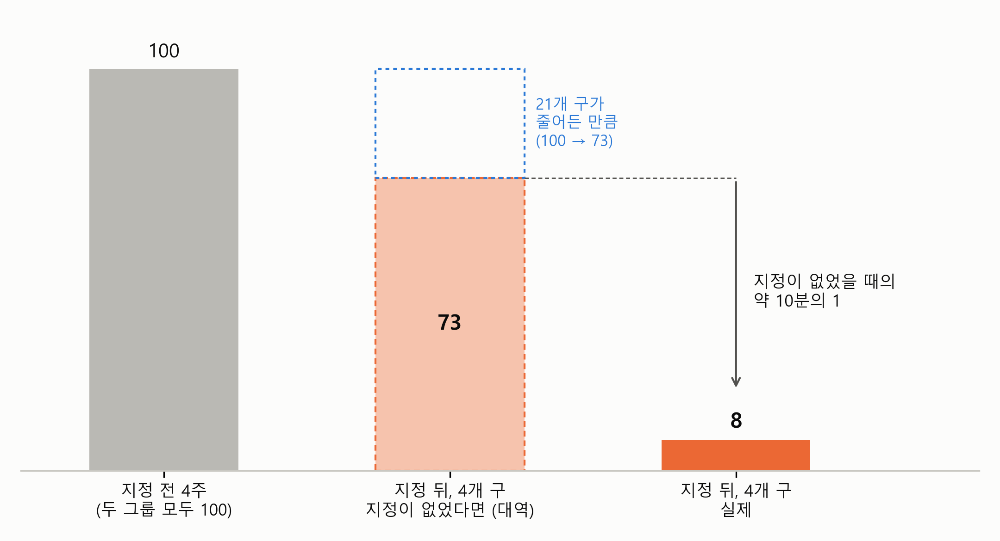

2. 변화로 비교하기 — 대역을 세운다#
보고서의 요약은 이렇게 시작합니다.
지정 뒤 4주 동안 강남·서초·송파·용산의 계약은 지정 직전 4주의 8% 수준으로 줄었다(주 평균 642건 → 49건).
계약이 열에 하나도 남지 않았습니다. 그렇다면 줄어든 92%가 모두 토지거래허가구역 지정 때문일까요? 보고서는 그렇게 말하지 않습니다. 요약의 둘째 줄이 “같은 기간 나머지 21개 구도 73% 수준으로 줄었다”를 덧붙이고, 지정의 효과를 “지정이 없었을 때의 약 10분의 1”로 따로 적습니다.
미리 답부터 말하면, 4개 구의 전과 후만 비교하면 그동안 서울 전체에 일어난 일까지 지정의 효과로 계산하게 됩니다. 그래서 지정되지 않은 21개 구가 그동안 변한 만큼을 빌려 와, 4개 구의 “지정이 없었다면”을 세웁니다. 이 절에서는 그 방법을 보충수업 이야기로 먼저 세우고, 아파트 거래에 그대로 옮겨 봅니다.
전과 후만 보면 — 그동안 다른 일도 있었다#
인과 장에서 본 보충수업으로 돌아가 봅시다. 성적이 낮은 학생들을 위해 방과 후 보충수업을 열었고, 보충수업을 들은 학생의 점수가 학기 초 60점에서 학기 말 70점이 되었습니다. 10점이 올랐으니 보충수업의 효과는 10점일까요?
꼭 그렇지는 않습니다. 학기 말 시험이 학기 초 시험보다 쉬웠을 수도 있고, 학기 중에 학교 전체가 공부 분위기에 휩쓸렸을 수도 있습니다. 그렇다면 보충수업을 듣지 않았어도 점수는 어느 정도 올랐을 것입니다. 같은 학생의 전과 후를 비교하면 그 학생이 원래 몇 점짜리 학생이었는지는 비교에서 빠지지만, 그 사이에 모두에게 일어난 일은 빠지지 않습니다.
이런 일은 생활에서도 흔합니다.
12월에 할인 행사를 했더니 매출이 30% 늘었습니다. 그런데 12월은 할인 행사가 없어도 연말 쇼핑으로 매출이 느는 달입니다.
12월에 우리 집만 벽에 단열 공사를 했는데, 1월 난방비가 5만 원에서 9만 원으로 올랐습니다. 공사가 난방비를 올린 것이 아니라 1월이 12월보다 추웠습니다.
새 신호등을 단 교차로에서 다음 해 사고가 줄었습니다. 그런데 그해에 도시 전체의 교통사고가 줄었다면, 줄어든 사고가 모두 신호등 덕분은 아닙니다.
세 예 모두 처치(할인 행사, 단열 공사, 신호등)를 받은 쪽만 전과 후로 보았고, 그 사이에 날씨나 계절이나 도시 전체의 흐름처럼 처치와 상관없이 함께 바뀐 것이 있었습니다. 전후의 차이에는 처치의 효과와 그 함께 바뀐 몫이 같이 들어 있고, 처치를 받은 쪽만 보아서는 둘을 나눌 수 없습니다.
아파트 거래도 같습니다. 보고서의 그림에서 보듯이 3월 말에는 지정되지 않은 21개 구의 계약도 지정 직전보다 줄었습니다. 왜 줄었는지는 이 자료로 가릴 수 없지만, 4개 구에도 같은 흐름이 있었다면 4개 구에서 줄어든 92% 가운데 일부는 지정이 없었어도 줄었을 몫입니다.
보충수업의 오른 점수 — 비교 상대가 그동안 변한 만큼 빼기#
그러면 그 함께 바뀐 몫을 어떻게 알아낼까요? 처치를 받지 않은 쪽을 보면 됩니다. 같은 학교에서 보충수업을 듣지 않은 학생이 학기 초 90점에서 학기 말 92점이 되었다고 해 봅시다. 이 학생은 보충수업을 듣지 않았으니, 2점이 오른 것은 보충수업 말고 그 사이에 학교에서 일어난 일 때문입니다.
이제 보충수업을 들은 학생의 “보충수업을 듣지 않았다면”을 세울 수 있습니다. 인과 장에서 이것을 반사실이라고 불렀고, 실제로 볼 수 없는 반사실을 다른 사람이 대신 보여 주는 것을 대역 배우에 빗댔습니다. 여기서는 대역을 이렇게 세웁니다. 보충수업을 들은 학생의 학기 초 점수에서 출발해, 보충수업을 듣지 않은 학생이 오른 만큼 올랐을 것이다. 60점에서 2점이 오른 62점이 대역입니다. 실제 학기 말 점수는 70점이니, 대역보다 8점 높습니다. 이 8점이 보충수업의 효과입니다.
같은 계산을 차이를 두 번 구하는 것으로 볼 수도 있습니다. 먼저 학생마다 전과 후의 차이를 구하면 보충수업을 들은 학생은 10점, 듣지 않은 학생은 2점이 올랐습니다. 다음으로 그 두 차이의 차이를 구하면 8점입니다. 대역과 비교하는 계산과 차이의 차이를 구하는 계산은 같은 계산을 다른 순서로 한 것입니다. 이 계산을 이중차분(difference-in-differences, DID)이라고 부릅니다. 이름 그대로 차이를 두 번 구합니다.
두 번의 빼기는 하는 일이 다릅니다.
첫째 빼기(같은 학생의 전과 후)는 학생이 원래 몇 점짜리였는지를 비교에서 뺍니다. 학기 말 점수를 그대로 비교하면 보충수업을 들은 학생이 22점 낮아서 보충수업이 해로워 보였는데, 오른 점수로 비교하면 그 원래의 차이가 빠집니다. 패널 데이터 분석 장의 고정효과가 같은 나라의 변화만 보아 나라마다의 원래 차이를 떼어 낸 것과 같은 생각입니다.
둘째 빼기(비교 상대가 오른 만큼)는 그 사이에 모두에게 일어난 일을 뺍니다. 앞 소절의 할인 행사, 단열 공사, 신호등에서 빠지지 않던 몫입니다. 패널 데이터 분석 장의 연도 효과가 그해에 모든 나라에 함께 일어난 변화를 잡은 것과 같습니다.
단열 공사로 한 번 더 해 봅시다. 우리 집과 옆집 모두 12월 난방비가 5만 원이었고, 우리 집만 단열 공사를 했습니다. 1월 난방비는 우리 집 9만 원, 옆집 12만 원이었습니다. 옆집은 공사를 하지 않았으니, 7만 원이 오른 것은 1월이 추워서입니다. 우리 집도 공사를 하지 않았다면 7만 원쯤 올랐을 것이고, 실제로는 4만 원만 올랐습니다. 우리 집만 보면 공사 뒤에 난방비가 올랐지만, 옆집과 비교하면 공사가 난방비를 3만 원 줄였습니다.
지정되지 않은 21개 구 — 아파트의 대역#
아파트 거래에 옮기면 이렇습니다. 보충수업을 들은 학생의 자리에 지정된 4개 구가, 듣지 않은 학생의 자리에 지정되지 않은 21개 구가 섭니다. 21개 구는 3월 24일에 아무것도 바뀌지 않았으니, 21개 구의 계약이 그동안 변한 만큼이 “그 사이에 서울 전체에 일어난 일”의 몫입니다. 표 2-1은 보고서의 추정 결과 표를 지정 전후의 변화와 함께 다시 실은 것입니다.
표 2-1. 지정 전후 4주의 주 평균 계약 건수
지정 전 4주 |
지정 뒤 4주 |
지정 직전 = 100 |
|
|---|---|---|---|
나머지 21개 구 (비교 상대) |
1,578 |
1,148 |
73 |
강남·서초·송파·용산 (지정) |
642 |
49 |
8 |
4개 구, 지정이 없었다면 (대역) |
73 |
주: 지정 전 4주는 2025년 2월 17일 ~ 3월 16일(3월 19일 발표 뒤 계약이 몰린 3월 17일 주는 뺐다), 지정 뒤 4주는 3월 24일 ~ 4월 20일. 계약일 기준, 해제된 거래는 빼고 중개거래와 직거래를 모두 셌다. 마지막 열은 그룹마다 지정 전 4주의 주 평균을 100으로 놓은 값이다.
그런데 보충수업처럼 그대로 빼면 이상한 답이 나옵니다. 21개 구는 주 평균 430건쯤 줄었고, 4개 구는 590건쯤 줄었습니다. 4개 구도 21개 구만큼 430건이 줄었을 것이라고 대역을 세우면, 지정 전에 주 642건이던 4개 구가 지정이 없었어도 주 200건 남짓으로 줄었다는 말이 됩니다. 21개 구에서는 넷 가운데 하나꼴로 줄어든 흐름이, 크기가 작은 4개 구에서는 셋 가운데 둘이 줄어드는 흐름이 되어 버립니다.
두 그룹의 크기가 다르기 때문입니다. 큰 가게와 작은 가게를 생각하면 쉽습니다. 연말에 큰 가게의 매출이 1,000만 원에서 1,100만 원으로 늘었다면, 매출이 100만 원인 작은 가게도 100만 원이 늘어 두 배가 되었으리라고 보는 사람은 없습니다. 작은 가게도 큰 가게처럼 10%쯤 늘었으리라고 보는 것이 자연스럽습니다. 크기가 다른 두 그룹을 비교할 때는 몇 건이 줄었는지보다 몇 퍼센트가 줄었는지를 빌려 오는 것이 맞습니다.
그래서 보고서는 두 그룹 모두 지정 직전 4주를 100으로 맞췄습니다. 표 2-1의 마지막 열이 그것입니다. 둘 다 100에서 출발하면 21개 구가 줄어든 만큼을 4개 구에 그대로 빌려 올 수 있습니다. 21개 구는 100에서 73이 되었으니, 4개 구도 지정이 없었다면 100에서 73이 되었을 것이고, 이것이 4개 구의 대역입니다. 실제 4개 구는 8이었습니다. 그림 2-1이 이 계산을 막대로 그린 것입니다.

그림 2-1. 4개 구의 대역. 지정 직전 4주를 100으로 맞추고, 21개 구가 줄어든 만큼(100 → 73)을 4개 구에 빌려 오면 “지정이 없었다면”의 73이 된다. 실제는 8이다.
그림에서 보듯이 대역의 막대는 73이고 실제의 막대는 8이어서, 실제는 대역의 약 10분의 1입니다. 보고서가 “지정 뒤 4개 구의 계약은 지정이 없었을 때의 약 10분의 1”이라고 쓴 것이 이 비교입니다. 4개 구만의 전과 후를 보면 지정 뒤의 계약이 지정 전의 8%였지만, 그 가운데 100에서 73까지는 지정이 없었어도 줄었을 몫이고, 지정 때문에 줄어든 것은 73에서 8까지입니다.
크기가 다른 두 그룹을 100으로 맞춰 비교하는 것은 아파트에서만 쓰는 방법이 아닙니다. 인구가 다른 두 도시의 범죄 건수, 매출이 다른 두 매장의 판매량, 학생 수가 다른 두 학교의 결석 일수처럼 건수를 세는 자료에서는 흔히 이렇게 비율로 비교합니다.
회귀식으로 쓰면#
보고서의 추정 결과 표 아래에는 이런 줄이 있습니다.
주: … 회귀식(구 × 주 계약 건수의 포아송 회귀, 구마다 절편, 처치 × 지정 뒤 상호작용)으로 추정해도 같은 크기다 — 지정이 없었을 때의 0.105배(95% 신뢰구간 0.08 ~ 0.14, 구 단위 군집 표준오차, 25개 구 × 8주).
이중차분은 회귀식으로도 할 수 있습니다. 다중회귀분석 장에서 소개한 상호작용을 쓰면 됩니다. 말로 한 두 번 빼기가 식에서는 어떻게 되는지, 보충수업으로 먼저 보겠습니다.
스위치(더미 변수) 두 개를 만듭니다. 보충수업을 들은 학생이면 1인 “보충수업”과, 학기 말 시험이면 1인 “학기 말”입니다. 그리고 두 스위치를 곱한 상호작용 항을 더합니다.
다중회귀분석 장에서 한 것처럼 스위치에 0과 1을 넣어 보면, 두 학생의 두 시험이 이렇게 됩니다. 꺼진 스위치가 붙은 항은 0이 되어 사라집니다.
이제 두 번 빼기를 식으로 해 봅니다. 첫째 빼기는 학생마다 학기 말에서 학기 초를 빼는 것입니다. 듣지 않은 학생은 \((a + c) - a\)이니 \(c\)가 남고, 들은 학생은 \((a + b + c + d) - (a + b)\)이니 \(c + d\)가 남습니다. 여기서 \(b\)가 지워졌습니다. \(b\)는 들은 학생이 학기 초에 듣지 않은 학생과 얼마나 달랐는지, 곧 원래 몇 점짜리 학생이었는지입니다(60 − 90 = −30점). 첫째 빼기가 원래의 차이를 뺀다는 말이 식에서는 \(b\)가 지워지는 것입니다.
둘째 빼기는 두 학생의 오른 점수를 빼는 것입니다.
이번에는 \(c\)가 지워졌습니다. \(c\)는 두 학생 모두에게 똑같이 붙어 있는 몫, 곧 그 사이에 모두에게 일어난 일입니다(92 − 90 = 2점). 마지막에 남는 것은 상호작용 항의 계수 \(d\) 하나이고, 점수를 넣으면 10 − 2 = 8점, 앞에서 구한 보충수업의 효과입니다. 상호작용 항의 계수가 이중차분의 답입니다.
대역도 식에서 보입니다. 들은 학생의 학기 말 \(a + b + c + d\)에서 상호작용 항 \(d\)만 빼면 \(a + b + c\), 곧 학기 초 점수 \(a + b\)에 모두에게 일어난 일 \(c\)를 더한 것입니다. 60 + 2 = 62점, 앞에서 세운 대역이죠. \(d\)는 실제와 대역의 차이입니다.
아파트의 회귀식은 이 식에서 두 군데가 다릅니다. 첫째, 4개 구 스위치 대신 구마다 자기 절편을 둡니다. 패널 데이터 분석 장에서 나라마다 자기 높이 \(a_i\)를 두었듯이, 여기서는 25개 구가 저마다 자기 높이 \(a_i\)를 갖습니다. 구마다 원래 몇 건짜리 구였는지가 \(a_i\)에 담기니, 4개 구가 원래 21개 구와 다른 몫(보충수업 식의 \(b\))도 이미 4개 구의 \(a_i\)에 들어 있습니다. 그래서 4개 구 스위치는 따로 넣지 않습니다. 다중회귀분석 장에서 구 더미가 이미 있어 강남3구 스위치를 따로 넣지 않은 것과 같은 이유입니다. 둘째, 건수에 로그를 취합니다. 식으로 쓰면 이렇습니다. \(i\)는 구, \(t\)는 주입니다.
뺄셈은 보충수업과 똑같습니다. 구마다 지정 뒤에서 지정 전을 빼면 \(a_i\)가 지워져, 21개 구에는 \(c\)가, 4개 구에는 \(c + d\)가 남습니다. 두 그룹의 차이를 빼면 \(c\)도 지워지고 \(d\)가 남습니다. \(a_i\)가 지워지는 것이 첫째 빼기, \(c\)가 지워지는 것이 둘째 빼기입니다.
로그를 취한 덕분에 달라지는 것은 빼기의 뜻입니다. 로그에서는 빼기가 나누기가 됩니다. 다중회귀분석 장에서 로그가격의 차이가 \(d\)이면 가격이 \(e^d\)배 차이 난다고 했던 것과 같습니다. 그래서 첫째 빼기는 “지정 뒤가 지정 전의 몇 배인가”를 구하는 일이 됩니다. 표 2-1에서 두 그룹을 지정 직전 = 100으로 맞춰 21개 구는 0.73배, 4개 구는 0.08배를 구한 것이 바로 이 일입니다. 둘째 빼기는 그 두 배수를 나누는 일이 되어, 4개 구의 배수가 21개 구의 배수의 몇 배인가, 곧 실제가 대역의 몇 배인가를 구합니다. 보고서의 자료로 추정하면 상호작용 항의 계수 추정값은 \(\hat{d}\) = −2.25이고, \(e^{-2.25}\) ≈ 0.105배입니다. 표 2-1에서 대역 73과 실제 8로 구한 약 10분의 1과 같은 답이고, 같은 계산을 식으로 한 것이라 같은 답이 나옵니다.
보고서는 이 식을 포아송 회귀(Poisson regression)로 추정했습니다. 이름이 낯설지만 복잡하게 생각할 것은 없습니다. 종속변수가 계약 건수처럼 0, 1, 2, … 의 정수만 가질 때 쓰는 회귀분석이라는 점이 다를 뿐, 설명변수를 넣어 회귀식을 세우고 계수를 해석하는 원리는 다중회귀분석 장에서 본 회귀분석과 같습니다. 더미 변수도, 상호작용 항도, “다른 조건이 같다면”이라는 해석도 그대로입니다. 다만 종속변수에 로그를 취한 회귀식이라서, 다중회귀분석 장의 로그가격 회귀식처럼 계수 \(d\)를 \(e^d\)배로 읽습니다. 위에서 0.105배를 구한 방법이 바로 그것입니다.
참고: 엄밀히 말하면 포아송 회귀가 로그를 취하는 것은 실제 건수가 아니라 평균적으로 기대되는 건수입니다. 그래서 계약이 0건인 구 × 주도 그대로 쓸 수 있습니다(실제 건수 0에는 로그를 취할 수 없습니다).
신뢰구간 0.08 ~ 0.14는 표본을 다시 뽑아도 답이 10분의 1 안팎에서 크게 흔들리지 않는다는 뜻입니다. 표준오차는 같은 구의 여러 주가 서로 닮은 것을 감안해 구 단위 군집 표준오차로 구했습니다. 건강 횡단면 장에서 본 군집 표준오차와 같은 생각입니다.
💡 팁: 처치 전후의 자료와 처치를 받지 않은 비교 상대가 있으면, AI에게 이렇게 요청해 보세요. “처치 그룹과 비교 그룹의 처치 전후 평균을 2×2 표로 보여 주고, 이중차분(difference-in-differences)으로 처치 효과를 추정해 줘. 두 그룹의 크기가 크게 다르면 건수 대신 비율로 비교하고, 회귀식으로도 추정해서 같은지 확인해 줘.”
4개 구에서 일어난 일#
약 10분의 1이라는 답은 2025년 3월의 강남·서초·송파·용산에서 일어난 일입니다. 같은 지정을 다른 구에 했을 때도 거래가 10분의 1로 줄었으리라는 뜻은 아닙니다. 4개 구는 지정 직전 4주에 ㎡당 중위 거래가격이 서울 25개 구 가운데 가장 높은 네 구였고, 그 가운데 강남구와 송파구의 일부 동네는 지정 직전에 허가구역이 풀렸다가 다시 묶인 곳이었습니다. 그런 곳의 사람들이 지정에 반응한 크기가 다른 곳의 사람들과 같으리라는 보장은 없습니다.
보충수업도 같습니다. 8점은 보충수업을 들은 학생들, 곧 성적이 낮은 학생들에게서 생긴 효과입니다. 성적이 좋은 학생이 보충수업을 들어도 8점이 오르리라고는 말할 수 없습니다. 이중차분이 알려 주는 것은 처치를 받은 쪽에서 일어난 효과입니다.
그리고 이 모든 계산은 대역이 맞을 때만 효과가 됩니다. 4개 구가 지정되지 않았다면 정말로 21개 구처럼 100에서 73이 되었을까요? 다음 절에서 그 물음을 따져 봅니다.
요약 — 이 절의 물음과 답
4개 구의 계약이 지정 뒤 8% 수준으로 줄었는데, 줄어든 것이 모두 지정 때문일까? 아니다. 전과 후만 비교하면 그 사이에 서울 전체에 일어난 일까지 지정의 효과로 계산하게 된다. 같은 기간 지정되지 않은 21개 구도 100에서 73으로 줄었다.
“지정이 없었다면”은 어떻게 세우나? 처치를 받지 않은 비교 상대가 그동안 변한 만큼을 빌려 와, 처치를 받은 쪽의 처치 전 값에 더한다. 이것이 이중차분이고, 전후의 차이를 구한 다음 그 두 차이의 차이를 구하는 것과 같은 계산이다.
두 그룹의 크기가 다르면? 몇 건이 줄었는지 대신 몇 퍼센트가 줄었는지를 빌려 온다. 두 그룹 모두 지정 직전을 100으로 맞추면 4개 구의 대역은 73이고, 실제 8은 그 약 10분의 1이다.